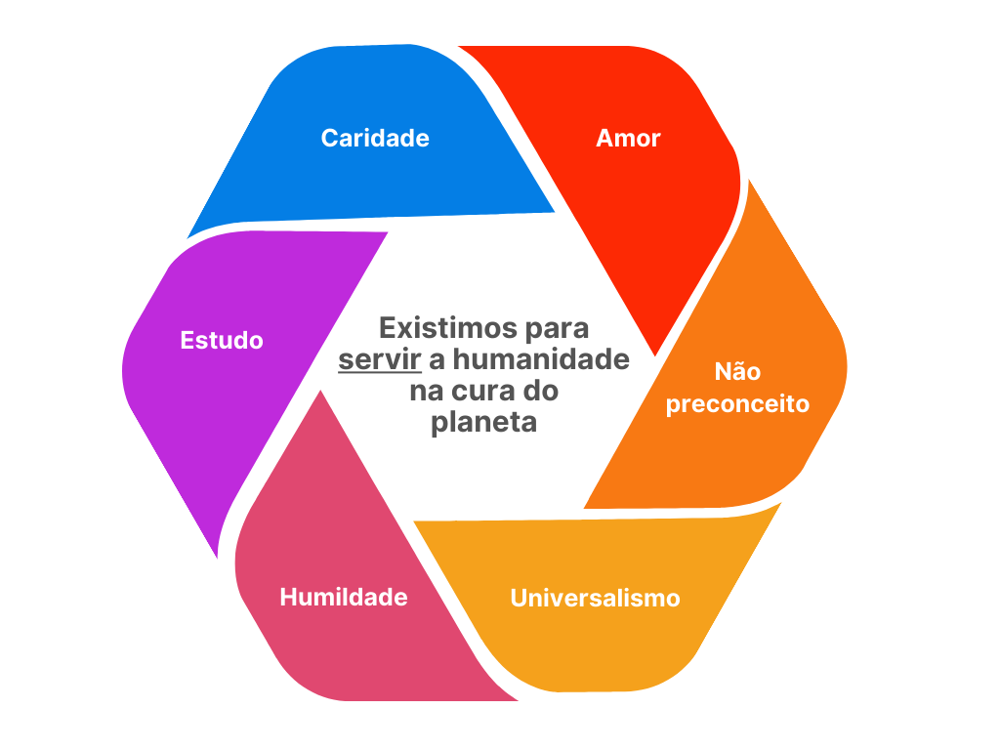

Para servir
Para sorrir
Para escolher
Para viver
Somos uma casa universalista sem fins lucrativos, que segue ritos de diferentes religiões com o propósito de auxiliar o ser humano em seu desenvolvimento individual, olhando para a saúde de maneira integral: corpo, mente e espírito.
Não somos igreja, centro espírita ou terreiro... Somos um espaço que busca contribuir com o desenvolvimento da humanidade criando pontes e não muros entre as diferentes crenças e filosofias.
Acreditamos na integração cósmica das religiões junto à ciência e à espiritualidade, respeitando a individualidade de cada ser humano e sua liberdade de escolha.
Com humildade e amor, vamos seguindo nessa caminhada. Axé pra quem é do axé, amém para quem é de amém, aho para quem é de aho e luz e sabedoria para todos nós! Confira nossas atividades:
Estudo online segunda-feira às 19:00
Estudo online segunda-feira às 20:15
2x por mês Terça-feira às 19:30
2x por mês Quarta-feira às 19:30
Trabalho presencial sexta-feira às 19:30
Trabalho presencial sexta-feira às 20:00
Trabalho presencial 1x por mês
Trabalho presencial 1x por mês

Renascer me trouxe uma experiência incrível na busca da minha espiritualidade e do meu crescimento interior. Super recomendo 🙏
Participei de uma sessão com a medicina da Ayahuasca, fazendo uma conexão comigo mesma, abrindo meu campo energético, trazendo benefícios terapêuticos incríveis, melhorando o meu ânimo e bem estar.
Comecei a participar do estudo do Evangelho on-line do Espaço Renascer a cerca de um ano atrás e desde então muita coisa mudou. A compreensão veio aos poucos dos medos e desafios do caminho. A medicina entrou como ferramenta para enxergar a verdade. O estudo, a sabedoria do plano espiritual que está ao nosso dispor.
Espaço Renascer além de apoiar no desenvolvimento do estudo espírita e na orientação sobre a mediunidade, me acolheu numa das mais complexas e difíceis situações que vivi! Recebi todo suporte, consolo e amor possível, como uma família de alma, pude recorrer ao espaço que me ajudou a encontrar um novo sentido depois do meu luto.